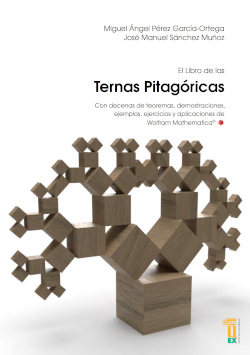
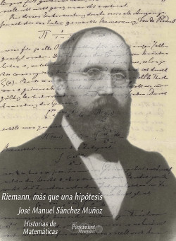
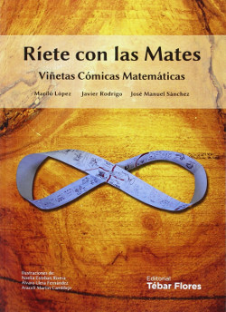
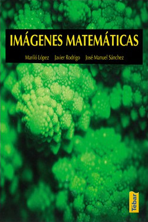
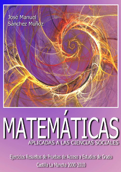

El Libro de las Ternas Pitagóricas. Servicio de Publicaciones de la Universidad de Extremadura. ISBN: 978-84-9127-357-8. Abr. 2026
En la cabeza de todos aquellos que hemos pasado por la escuela, consideramos que el teorema de Pitágoras es la relación matemática que ocupa nuestros primeros recuerdos. Casi todas las civilizaciones antiguas la consideraron como una herramienta útil y fundamental para su propio desarrollo. A lo largo de la historia tuvo la admiración y el interés de multitud de personajes (Leonardo, Hobbes, Schopenhauer, Einstein. . .). La verosimilitud de dicho teorema se ha llevado a cabo mediante infinidad de estrategias y distintas personas. Para muchos, su aparición significa un punto de partida y la aparición de la Geometría racional en la Escuela Pitagórica. Pitágoras (Samos, ca. 570 - Metaponto, ca. 490 a. C.), personaje histórico para unos, o representante de una secta para otros, no fue el primero que realizó una demostración del mismo.
De hecho, el resultado era ya conocido mucho antes, y civilizaciones como la babilónica, o la egipcia, la elevaron a resultado esencial, primordial, sagrado, casi rozando el misticismo. El teorema se convirtió en el germen básico de la propia naturaleza de la ciencia matemática desde su origen como ciencia especulativa y deductiva en el amanecer de la civilización helénica.
El teorema de Pitágoras significó un punto de partida en la aparición de la demostración y el razonamiento deductivo en la ciencia matemática. Quizás es la razón por la que muchos de nosotros no tenemos más remedio que considerar este teorema como la primera práctica deductiva en el desarrollo matemático escolar elemental que recibimos en la infancia. Se erige como el pilar fundamental del edificio matemático en nuestro proceso formativo escolar. Aparece en estudios sobre superficies y cuerpos geométricos, en la Geometría Analítica y la Trigonometría, y la raíz histórica del Análisis indeterminado.

Riemann, más que una hipótesis. Colección Historias de Matemáticas, Monografías (versión ebook). Oct. 2021. Grupo de Innovación Educativa "Pensamiento Matemático", Universidad Politécnica de Madrid. ISSN: 2792-5080.
A lo largo de la historia de la humanidad, los números primos han despertado en el hombre un especial interés. El ser humano, en su continua búsqueda de patrones en todo lo que le rodea, se empeñó desde la antigua Grecia, en encontrar el modo de predecir la distribución de este conjunto de números. Desde Euclides hasta Gauss, dicha búsqueda resultó infructuosa, pero con Riemann se produjo el gran salto cualitativo que dicho problema tan esquivo necesitaba.
En el mes de noviembre de 1859, durante la presentación mensual de los informes de la Academia de Ciencias de Berlín, el alemán presentó un trabajo que cambiaría los designios futuros de la ciencia matemática. El tema central de su informe se centraba en los números primos, presentando la denominada "hipótesis de Riemann", que hoy día, una vez demostrada la Conjetura de Poincaré, debe ser considerado el problema matemático abierto más importante.
Por méritos propios, Riemann es hoy día para muchos uno de los matemáticos más sobresalientes de la historia de la humanidad, sin duda a la altura de Arquímedes, Newton o Gauss. Éste último, apodado el príncipe de las matemáticas, se encargó de afrontar retos en infinidad de campos de la misma, pero Riemann fue capaz de imprimirle un carácter de soberbia genialidad a todas sus investigaciones, dando el impulso definitivo a ramas de la matemática como la teoría analítica de números, o fundando otras como las geometrías riemannianas base de la teoría de la relatividad que se encarga de explicar el funcionamiento de nuestro Universo, que lejos de resultar ramas obsoletas de las matemáticas, mantienen su vigencia hoy día y seguramente por varios cientos de años.

Ríete con las Mates. Viñetas Cómicas Matemáticas. Editorial Tébar - Flores. ISBN: 978-84-7360-525-0. 2015.
Este libro recoge las viñetas cómicas que forman la exposición “Ríete con las Mates: Viñetas Cómicas Matemáticas” del Aula Taller-Museo de las Matemáticas π-ensa. Esta exposición ha sido confeccionada con ayuda de alumnos de la Escuela Técnica Superior de Ingenieros de Caminos, Canales y Puertos que han colaborado en la parte artística de la ilustración de los chistes. En ella se recopilan, por un lado “bromas” matemáticas conocidas a las que se les ha dado un toque personal y por otro, chistes de la cosecha de los autores.
En el libro, cada viñeta se acompaña de un cartel explicativo de la matemática a la que se hace referencia en ella. Dichas viñetas se han clasificado en temas que se introducen a partir de un recordatorio de los conceptos básicos de los mismos.
La finalidad del texto, así como de la exposición, es el acercamiento a las matemáticas a la vez que demostrar el interés que puede tener el empleo del humor como arma didáctica en la enseñanza de esta ciencia que, en muchos casos, despierta el rechazo en gran parte de la sociedad.
La obra está dirigida a todo tipo de público, no hace falta una formación científica superior, solo interés y curiosidad por las matemáticas.

Imágenes Matemáticas. Editorial Tébar. ISBN: 978-84-7360-490-1. 2012.
Este libro nace con la idea de que hay matemáticas en todas partes, y que encontramos las matemáticas en imágenes cotidianas que miramos todos los días. Esta ciencia nos rodea en los objetos cotidianos, y aunque no la percibamos, la vemos constantemente: estructuras de edificios, elementos de la naturaleza, objetos comunes a nuestro quehacer diario nos muestran que las matemáticas están en todas partes.
El Grupo de Innovación educativa "Pensamiento Matemático" de la Universidad Politécnica de Madrid, organizó un concurso de fotografía matemática, con el fin de acercar esta ciencia a los estudiantes tanto de cursos previos a la universidad como a los estudiantes universitarios. Las fotografías más destacadas forman parte de este libro, enriquecido con los textos que explican el origen matemático de cada imagen. Son un resumen de la Exposición del Aula Taller-Museo “Fotografía Matemática”.

Matemáticas Aplicadas a las Ciencias Sociales. Ejercicios resueltos de Pruebas de Acceso a Estudios de Grado. Servicio de Publicaciones de la E.T.S. de Ingenieros de Caminos, Canales y Puertos. ISBN: 978-84-7493-453-3. 2011.
Este libro está enteramente pensado para satisfacer las necesidades prácticas de los alumnos que cursan 2º de Bachillerato de la especialidad de Matemáticas Aplicadas a las Ciencias Sociales.
Con un amplio abanico de resoluciones de todos los problemas que han formado parte de las Pruebas de Acceso a Estudios de Grado en la Universidad de Castilla La Mancha desde el año 2000 hasta el 2010, el lector podrá encontrar distintas maneras de atacar los problemas mediante la utilización de diferentes técnicas.
Los tres grnades bloques que conforman la estructura principal del libro tienen como objetivo que el aprendizaje del alumno resulte lo más efectivo posible. En cierto modo, es lo más parecido posible a tener un tutor personalizado, ya que es el estudiante el que puede proceder a un ritmo de aprendizaje que resulte idóneo para sus necesidades pedagógicas, y todas las dificultades que se encuentran son aclaradas antes de adquirir conceptos o técnicas erróneas.
Se trata por lo tanto de una obra de autoayuda, de apoyo, en definitiva de un libro hecho por y para los alumnos que quieren enfrentarse a la Prueba de Acceso de Estudios de Grado con ciertas garantías de éxito.